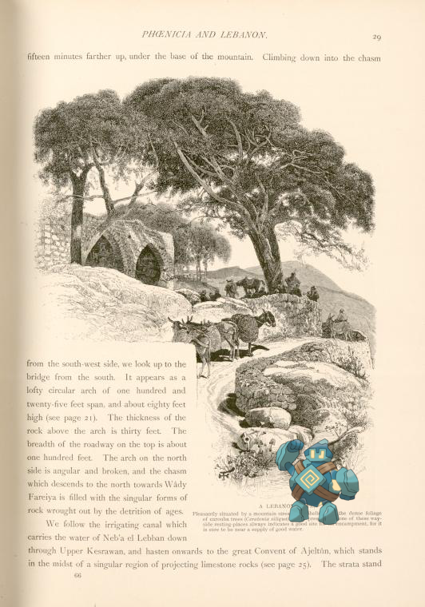

Pokémon in the NYPL archives
2018-6-13 00:10:03

Golett @
A Lebanon café. Pleasantly situated by a mountain stream and sheltered by the dense foliage of the carouba trees (Ceratonia siliqua). The presence of one of these wayside resting places always indicates a good site for an encampment, for it is sure to be near a supply of good water.